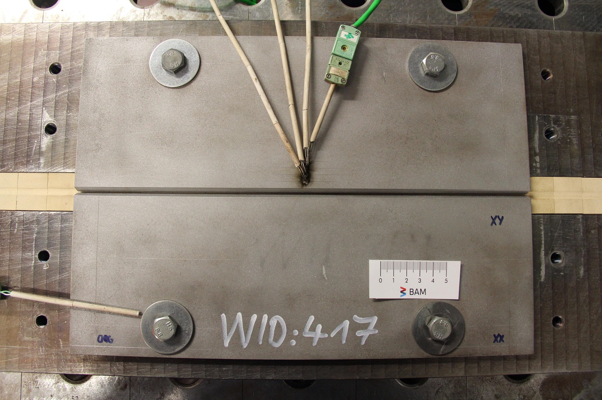

2021 IIW Annual Assembly C-XII¶
This notebook is an extended interactive version of the weldx features and example dataset presented at the 2021 IIW Annual Assembly C-XII meeting.
The code of this notebook can be found here: https://github.com/BAMWelDX/IIW2021_AA_CXII
You can launch this notebook as an interactive binder session in your browser following this link:
https://mybinder.org/v2/gh/BAMWelDX/IIW2021_AA_CXII/main?urlpath=lab/tree/iiw2021_CXII_fabry_cagtay_01.ipynb
The weldx documentation and code is available online:
https://weldx.readthedocs.io/en/latest/
https://github.com/BAMWelDX/weldx
The weldx documentation and GitHub links for this specific code version v0.6.9 can be found here:
https://weldx.readthedocs.io/en/v0.6.9/index.html
https://github.com/BAMWelDX/weldx/tree/v0.6.9
Process Video¶
To give an ovierview of this welding example, here is a video recording of the welding experiment conducted at BAM.
We can see the pre- and post-welding scan of the workpiece geometry as well as the position of the temperature measurements.
Imports¶
We start with some general python package imports used throughout this notebook.
import pprint
import matplotlib.pyplot as plt
from weldx import Q_, WeldxFile
from weldx.asdf.util import get_schema_path, view_tree
pp = pprint.PrettyPrinter(indent=2)
pprint = pp.pprint
Some helper functions for this notebook are included in the helpers.py file.
# default plotting styles
plt.rcParams.update({"axes.grid": True, "figure.figsize": (10, 6)})
from helpers import (
ax_setup,
build_base_csm,
create_geometry,
cs_colors,
plot_gmaw,
plot_measurements,
plot_signal,
welding_wire_geo_data,
)
1. Opening the file¶
We define the weldx filename that contains the data used for this notebook.
filename = "./single_pass_weld.weldx"
To get an overview of the file contents we can use the view_tree function of the weldx library to create an interactive tree view.
Try searching for a specific term like wire_feedrate using the Filter… box in the upper right.
view_tree(filename)
<IPython.core.display.JSON object>
To open and access the example dataset we will use the WeldxFile class.
wx_file = WeldxFile(filename, "r", sync=False)
You can find more infos about handling weldx files in the tutorial: https://weldx.readthedocs.io/en/latest/tutorials/weldxfile.html
The file is expected to validate against the schema single_pass_weld-0.1.0.yaml.
The schema ensures that all elements of the weldx file pass the requirements defined in the schema, including:
all requirement entries are present in the file:
workpieceTCPwelding_currentwelding_voltagemeasurement chainsequipment
all entries and objects stored in the file have the correct type
all additional restrictions defined in
single_pass_weld-0.1.0.yamlare met
The details describing the schema requirements can be found here: https://weldx.readthedocs.io/en/v0.5.0/generated/datamodels/single_pass_weld-0.1.0.html
file_schema = get_schema_path("single_pass_weld-0.1.0")
We open the weldx file and run a validation agains the single_pass_weld-0.1.0.yaml schema.
with WeldxFile(
filename,
"r",
custom_schema=file_schema,
sync=False,
asdffile_kwargs={"copy_arrays": True},
) as file:
wx_file = file
/home/runner/micromamba/envs/weldx/lib/python3.11/site-packages/asdf/_asdf.py:189: AsdfWarning: copy_arrays is deprecated; use memmap instead. Note that memmap will default to False in asdf 4.0.
warnings.warn(
We can now access and explore the contents of the file interactively in our notebook.
2. General metadata¶
First let’s look at some general simple metadata stored in the WelDX-file.
The (optional) reference_timestamp field is used to indicate the start time of the experiment (the moment of arc ignition). All time data that is not given as absolute time are interpreted as relative to the given reference time.
wx_file.get("reference_timestamp")
Timestamp('2021-03-17 11:06:42.334400')
We can deduce the total runtime of the experiment from the TCP movement of the welding.
wx_file["TCP"].time
Time:
DatetimeIndex(['2021-03-17 11:06:42.334400', '2021-03-17 11:07:23.667733333'], dtype='datetime64[ns]', freq=None)
reference time: 2021-03-17 11:06:42.334400
The WelDX standard introduces the wx_user field to store user specific content.
wx_file.get("wx_user")
{'WID': 417, 'operator': 'C. Schippereit', 'project': 'WelDX presentation'}
We define a time index from start to end of the experiment.
t = wx_file["TCP"].time.as_timedelta_index()
3. Workpiece definition¶
The file schema mandates that the user provides workpiece information with the following properties:
base_metalreferenced by a common name and the associated standardthe
geometryconsisting of a groove description following ISO 9692-1 and the seam length
Here is how this information is stored the workpiece entry of the example dataset weldx file:
workpiece:
base_metal: {common_name: S355J2+N, standard: 'DIN EN 10225-2:2011'}
geometry:
groove_shape: !weldx!groove/iso_9692_1_2013_12/VGroove-0.1.0
t: !weldx!units/quantity-0.1.0 {value: 8, units: !weldx!units/units-0.1.0 millimeter}
alpha: !weldx!units/quantity-0.1.0 {value: 45, units: !weldx!units/units-0.1.0 degree}
b: !weldx!units/quantity-0.1.0 {value: 1, units: !weldx!units/units-0.1.0 millimeter}
c: !weldx!units/quantity-0.1.0 {value: 1, units: !weldx!units/units-0.1.0 millimeter}
code_number: ['1.3', '1.5']
seam_length: !weldx!units/quantity-0.1.0 {value: 350, units: !weldx!units/units-0.1.0 millimeter}
workpiece material¶
Since we know exactly where to find the information in the file, we can access the metadata directly for all files that validate against the file schema.
wx_file["workpiece"]["base_metal"]["common_name"]
'S355J2+N'
wx_file["workpiece"]["base_metal"]["standard"]
'DIN EN 10225-2:2011'
seam length¶
The total seam length of the workpiece is also stored.
As throughout most of the functionality of the weldx API, physical units must be used where appropriate to avoid ambiguity.
seam_length = wx_file["workpiece"]["geometry"]["seam_length"]
print(seam_length)
350 mm
welding groove¶
The groove shape will be loaded into a specific weldx type:
groove = wx_file["workpiece"]["geometry"]["groove_shape"]
str(groove)
"VGroove(t=<Quantity(8, 'millimeter')>, alpha=<Quantity(45, 'degree')>, c=<Quantity(1, 'millimeter')>, b=<Quantity(1, 'millimeter')>, code_number=['1.3', '1.5'])"
The weldx API includes convinient functions to create and visualize different welding groove shapes.
Many examples and details are available in this tutorial: https://weldx.readthedocs.io/en/v0.5.0/tutorials/groove_types_01.html
To get a picture of the groove shape we can simply call the plot function.
groove.plot()
fig = plt.gcf()
fig.set_size_inches(7, 7);
---------------------------------------------------------------------------
ValueError Traceback (most recent call last)
File ~/micromamba/envs/weldx/lib/python3.11/site-packages/pint_xarray/conversion.py:323, in convert_units(obj, units)
322 try:
--> 323 new_obj = call_on_dataset(
324 convert_units_dataset, obj, name=temporary_name, units=units
325 )
326 except ValueError as e:
File ~/micromamba/envs/weldx/lib/python3.11/site-packages/pint_xarray/compat.py:13, in call_on_dataset(func, obj, name, *args, **kwargs)
11 ds = obj
---> 13 result = func(ds, *args, **kwargs)
15 if isinstance(obj, xr.DataArray) and isinstance(result, xr.Dataset):
File ~/micromamba/envs/weldx/lib/python3.11/site-packages/pint_xarray/conversion.py:307, in convert_units_dataset(obj, units)
306 if failed:
--> 307 raise ValueError(failed)
309 reordered = {name: converted[name] for name in obj.variables.keys()}
ValueError: {('s',): ValueError('cannot convert non-quantified index')}
The above exception was the direct cause of the following exception:
ValueError Traceback (most recent call last)
Cell In[16], line 1
----> 1 groove.plot()
2 fig = plt.gcf()
3 fig.set_size_inches(7, 7);
File ~/micromamba/envs/weldx/lib/python3.11/site-packages/decorator.py:235, in decorate.<locals>.fun(*args, **kw)
233 if not kwsyntax:
234 args, kw = fix(args, kw, sig)
--> 235 return caller(func, *(extras + args), **kw)
File ~/micromamba/envs/weldx/lib/python3.11/site-packages/weldx/util/util.py:439, in check_matplotlib_available(func, *args, **kwargs)
436 warnings.warn("Matplotlib is unavailable (module set to None).", stacklevel=2)
437 return
--> 439 return func(*args, **kwargs)
File ~/micromamba/envs/weldx/lib/python3.11/site-packages/weldx/welding/groove/iso_9692_1.py:147, in IsoBaseGroove.plot(self, title, axis_label, raster_width, show_params, axis, grid, line_style, ax, show_area)
145 if raster_width is None:
146 raster_width = Q_(0.5, _DEFAULT_LEN_UNIT)
--> 147 profile = self.to_profile()
148 if title is None:
149 title = _groove_type_to_name[self.__class__]
File ~/micromamba/envs/weldx/lib/python3.11/site-packages/weldx/welding/groove/iso_9692_1.py:366, in VGroove.to_profile(self, width_default)
363 y_value = np.append(y_value, t)
364 segment_list.append("line")
--> 366 return self._translate_reflect(b, segment_list, x_value, y_value)
File ~/micromamba/envs/weldx/lib/python3.11/site-packages/weldx/welding/groove/iso_9692_1.py:225, in IsoBaseGroove._translate_reflect(b, segment_list, x_value, y_value)
223 @staticmethod
224 def _translate_reflect(b, segment_list, x_value, y_value):
--> 225 shape = _helperfunction(segment_list, (x_value, y_value))
226 shape = shape.translate(Q_(np.append(-b / 2, 0), _DEFAULT_LEN_UNIT))
227 # y-axis as mirror axis
File ~/micromamba/envs/weldx/lib/python3.11/site-packages/weldx/welding/groove/iso_9692_1.py:1650, in _helperfunction(segment, array)
1647 segment_list.append(seg)
1648 counter += 2
-> 1650 return geo.Shape(segment_list)
File ~/micromamba/envs/weldx/lib/python3.11/site-packages/weldx/geometry.py:909, in Shape.__init__(self, segments)
896 """Construct a shape.
897
898 Parameters
(...)
906
907 """
908 segments = _to_list(segments)
--> 909 self._check_segments_connected(segments)
910 self._segments = segments
File ~/micromamba/envs/weldx/lib/python3.11/site-packages/weldx/geometry.py:935, in Shape._check_segments_connected(segments)
923 """Check if all segments are connected to each other.
924
925 The start point of a segment must be identical to the end point of
(...)
932
933 """
934 for i in range(len(segments) - 1):
--> 935 if not _vector_is_close(segments[i].point_end, segments[i + 1].point_start):
936 raise ValueError("Segments are not connected.")
File ~/micromamba/envs/weldx/lib/python3.11/site-packages/pint/registry_helpers.py:293, in wraps.<locals>.decorator.<locals>.wrapper(*values, **kw)
287 # In principle, the values are used as is
288 # When then extract the magnitudes when needed.
289 new_values, new_kw, values_by_name = converter(
290 ureg, sig, values, kw, strict
291 )
--> 293 result = func(*new_values, **new_kw)
295 if is_ret_container:
296 out_units = (
297 _replace_units(r, values_by_name) if is_ref else r
298 for (r, is_ref) in ret
299 )
File ~/micromamba/envs/weldx/lib/python3.11/site-packages/weldx/geometry.py:271, in DynamicShapeSegment.point_end(self)
267 @property
268 @UREG.wraps(_DEFAULT_LEN_UNIT, (None,), strict=True)
269 def point_end(self) -> pint.Quantity:
270 """Get the end point of the segment."""
--> 271 return self.get_points(self._max_coord)[0, :2]
File ~/micromamba/envs/weldx/lib/python3.11/site-packages/weldx/geometry.py:246, in DynamicBaseSegment.get_points(self, positions)
232 def get_points(self, positions: float) -> pint.Quantity:
233 """Get an array of the points at the specified relative positions.
234
235 Parameters
(...)
244
245 """
--> 246 p = self._series.evaluate(**{self._series.position_dim_name: positions})
247 return p.data_array.transpose(..., "c").data
File ~/micromamba/envs/weldx/lib/python3.11/site-packages/weldx/core/generic_series.py:497, in GenericSeries.evaluate(self, **kwargs)
495 if self.is_expression:
496 return self._evaluate_expr(coords)
--> 497 return self._evaluate_array(coords)
File ~/micromamba/envs/weldx/lib/python3.11/site-packages/weldx/core/generic_series.py:542, in GenericSeries._evaluate_array(self, coords)
539 if k not in self.data_array.dims:
540 raise KeyError(f"'{k}' is not a valid dimension.")
541 return self.__class__(
--> 542 ut.xr_interp_like(self._obj, da2=eval_args, method=self._interpolation)
543 )
File ~/micromamba/envs/weldx/lib/python3.11/site-packages/weldx/util/xarray.py:356, in xr_interp_like(da1, da2, interp_coords, broadcast_missing, fillna, method, assume_sorted)
349 # convert base array units to indexer units
350 # (needed for the indexing later and it will happen during interpolation anyway)
351 base_units = {
352 c: da_temp[c].attrs.get(UNITS_KEY)
353 for c in da1.coords.keys() & da_temp.coords.keys()
354 if UNITS_KEY in da1[c].attrs
355 }
--> 356 da1 = da1.pint.to(**base_units)
358 # make sure edge coordinate values of da1 are in new coordinate axis of da_temp
359 da_temp = _add_coord_edges(da1=da1, da2=da_temp, assume_sorted=assume_sorted)
File ~/micromamba/envs/weldx/lib/python3.11/site-packages/pint_xarray/accessors.py:592, in PintDataArrayAccessor.to(self, units, **unit_kwargs)
585 raise ValueError(
586 "units must be either a string, a pint.Unit object or a dict-like,"
587 f" but got {units!r}"
588 )
590 units = either_dict_or_kwargs(units, unit_kwargs, "to")
--> 592 return conversion.convert_units(self.da, units)
File ~/micromamba/envs/weldx/lib/python3.11/site-packages/pint_xarray/conversion.py:331, in convert_units(obj, units)
328 if temporary_name in failed:
329 failed[obj.name] = failed.pop(temporary_name)
--> 331 raise ValueError(format_error_message(failed, "convert")) from e
333 return new_obj
ValueError: Cannot convert variables:
incompatible units for variable ('s',): cannot convert non-quantified index
3D Geometry¶
With all the metadata of the workpiece available, it is easy to visualize a simple 3D model of the specimen.
geometry = create_geometry(groove, seam_length, Q_(10, "mm"))
geometry.plot(profile_raster_width=Q_(4, "mm"), trace_raster_width=Q_(60, "mm"))
ax_setup(plt.gca())
4. Welding TCP movement description¶
The path of the welding wire along the weld seam is given by the TCP property.
The weld path is a linear movement between two points at a constant weld speed. The TCP reference frame is the workpiece base coordinate system, starting at the beginning of the weld seam. The x-axis coordinates will indicate the start- and end-point of the welding process along the workpiece length. The y- and z-coordinates determine the position of the TCP in relation to the cross-sectional groove plane.
The information is stored in a LocalCoordinateSystem instance with two points and the start and end time relative to the reference_timestamp.
The YAML section of the weldx file describing the TCP movement looks like this:
TCP: !weldx!core/transformations/local_coordinate_system-0.1.0
reference_time: !weldx!time/timestamp-0.1.0 2021-03-17T11:06:42.334400
time: !weldx!time/timedeltaindex-0.1.0
values: !core/ndarray-1.0.0
data: [0, 41333333333]
datatype: int64
shape: [2]
start: !weldx!time/timedelta-0.1.0 P0DT0H0M0S
end: !weldx!time/timedelta-0.1.0 P0DT0H0M41.333333333S
min: !weldx!time/timedelta-0.1.0 P0DT0H0M0S
max: !weldx!time/timedelta-0.1.0 P0DT0H0M41.333333333S
coordinates: !weldx!core/variable-0.1.0
name: coordinates
dimensions: [time, c]
dtype: <f8
data: !core/ndarray-1.0.0
data:
- [20.0, 0.0, 3.0]
- [330.0, 0.0, 3.0]
datatype: float64
shape: [2, 3]
The data section of the coordiantes describe the start end end point in 3D space: [20.0, 0.0, 3.0] to [330.0, 0.0, 3.0] .
Therefor the welded part of the workpiece will extend from 20 mm to 330 mm of the joint. The offset in z-direction is 3 mm from the workpiece bottom.
We can create a CoordinateSystemManager instance and add the movement of the welding TCP to the geometry plot:
csm_base = build_base_csm(wx_file, plot=False)
csm_base.plot(
reference_system="workpiece",
coordinate_systems=["TCP weld"],
data_sets=["workpiece (simple)"],
colors=cs_colors,
show_wireframe=True,
show_data_labels=False,
show_vectors=False,
)
ax_setup(plt.gca())
5. Process description¶
The arc welding process must be defined using the following properties:
process:
type: object
properties:
welding_process:
$ref: "asdf://weldx.bam.de/weldx/schemas/process/GMAW-0.1.0"
shielding_gas:
tag: "asdf://weldx.bam.de/weldx/tags/aws/process/shielding_gas_for_procedure-0.1.*"
weld_speed:
...
welding_wire:
...
required: [welding_process, shielding_gas, weld_speed, welding_wire]
We can store the process property in a new variable:
process = wx_file["process"]
The weld speed is restricted to a constant value of dimension “[length]/[time]”
weld_speed:
tag: "asdf://weldx.bam.de/weldx/tags/core/time_series-0.1.*"
wx_unit: "m/s"
wx_shape: [1]
process["weld_speed"]
The welding wire is described by the constant diameter and a string describing the classification.
welding_wire:
type: object
properties:
diameter:
description: |
The diameter of the welding wire.
tag: "asdf://weldx.bam.de/weldx/tags/units/quantity-0.1.*"
wx_unit: "m"
wx_shape: [1]
class:
type: string
Additional metadata can be stored in the wx_user field if necessary. In the example, a G4Si1 wire with 1.2 mm diameter was used. The manufacturer and charge number are also given.
process["welding_wire"]
The shielding gas information consists of a common name and the gas mixture.
pprint(process["shielding_gas"].torch_shielding_gas.__dict__)
# switch to static plots
%matplotlib inline
The welding_process describes the parameters set at the welding power source during the course of the experiment.
Parameters are represented by a TimeSeries object and can vary over time. In this example, all parameters are set to constant values.
gmaw_process = process["welding_process"]
fig, ax = plot_gmaw(gmaw_process, t)
6. Measurements¶
We can list all measurements stored in the file.
for measurement in wx_file["measurements"]:
print(measurement.name)
We can also create a plot showing all signals stored in the measurement chains listed under measurements.
In the example dataset the welding current and voltage are recorded during the welding process. The temperature-measurements are recorded before and after the welding experiment. Due to the use of reference times, all signals can be synchronized.
plot_measurements(wx_file["measurements"])
# switch to interactive plots
%matplotlib widget
Plot the voltage measurement:
plot_signal(wx_file["welding_voltage"], name="welding_voltage")
Plot the current meausurement:
plot_signal(wx_file["welding_current"], name="welding_current")
Here is a detailed look at the current waveform:
plot_signal(wx_file["welding_current"], name="welding_current", limits=(23, 23.025))
7. Measurement chains¶
To document how a welding related measurement was conducted, we can describe and store measurement chains using the weldx API.
This includes:
describing the measurement equipment
describing multiple transformation steps from raw-data to the final measurement
providing information about measurement uncertainties and errors
attaching certification examples or similar files
An in depth example describing measurement chains can be found in the documentation: meassurement_example
current measurement chain¶
current_measurement_chain = wx_file["measurements"][0].measurement_chain
current_source = current_measurement_chain.source
print(current_source.name)
for processor in current_measurement_chain.transformations:
print(processor.name)
Each measurement chain object can be visualized with it’s plot function. The squared nodes represent signals, the circular nodes show data that is present for a single signal. Transformation steps between signals are given with name and some info.
# switch to static plots
%matplotlib inline
fig, ax = plt.subplots(nrows=1, figsize=(12, 6))
wx_file["measurements"][0].measurement_chain.plot(ax);
fig, ax = plt.subplots(nrows=1, figsize=(12, 6))
wx_file["measurements"][1].measurement_chain.plot(ax);
fig, ax = plt.subplots(nrows=1, figsize=(12, 6))
wx_file["measurements"][2].measurement_chain.plot(ax);
8. coordinate systems¶
The weldx API contains multiple functions to describe dependencies and transformations between multiple different coordinate systems.
translations and rotations
constant and time dependent transformations
transformation between different systems
grouping multiple systems into subsystems
transforming spatial data between different coordinate systems
visualization of transformations and systems
There are multiple tutorials available covering coordinate transformations using the LocalCoordinateSystem and CoordinateSystemManager classes:
https://weldx.readthedocs.io/en/v0.5.0/tutorials/transformations_01_coordinate_systems.html
https://weldx.readthedocs.io/en/v0.5.0/tutorials/transformations_02_coordinate_system_manager.html
https://weldx.readthedocs.io/en/v0.5.0/tutorials/transformations_02_coordinate_system_manager.html#Visualizing-the-coordinate-systems-of-the-CSM
https://weldx.readthedocs.io/en/v0.5.0/tutorials/welding_example_02_weaving.html
# switch to static plots
%matplotlib inline
In addition to the simplified weldment specification, the example dataset contains the complete coordinate system information describing the BAM arc welding setup.
the definition of the reference user frame used for robot programming
the recorded actual TCP movement of the robot
the movement of a laser line scanner attached to the robot head
We can load the instance of the coordinate system manager directly from the weldx file.
Following the file schema the data can be accessed under the key coordinate_systems.
csm = wx_file["coordinate_systems"]
We can visualize all loaded coordinate systems using the built-in plot functions.
csm
csm.plot_graph()
plt.gcf().set_size_inches(w=6, h=6)
Let’s take another look at the weld specimen.
The workpiece coordinate system has it’s origin located at the start of the workpiece at groove center. We can calculate the position of the thermocouple placement in the workpiece coordinate system.
csm.get_cs("T1", "user_frame")
The second thermocouple is offset by 5 mm from the first.
csm.get_cs("T2", "T1")
The following command will calculate the recorded robot TCP movement in reference to the workpiece coordinate system. Since the robot movement is time dependent, the result will be a time dependent coordiante system.
csm.get_cs("TCP", "workpiece")
csm
9. Interactive 3D visualization¶
Add geometry data to CSM¶
For visualization using the k3d backend we create some 3D data from the workpiece description metadata and add it to the CoordinateSystemManager
geometry_full_width = create_geometry(groove, seam_length, Q_(100, "mm"))
spatial_data_geo_full = geometry_full_width.spatial_data(
profile_raster_width=Q_(4, "mm"), trace_raster_width=Q_(60, "mm")
)
spatial_data_geo_full.coordinates = spatial_data_geo_full.coordinates.astype("float32")
spatial_data_geo_reduced = geometry.spatial_data(
profile_raster_width=Q_(4, "mm"), trace_raster_width=Q_(60, "mm")
)
csm.assign_data(spatial_data_geo_full, "workpiece geometry", "workpiece")
csm.assign_data(spatial_data_geo_reduced, "workpiece geometry (reduced)", "workpiece")
We also add a 3D model of the welding wire and attach it to the TCP coordinate system. The wire model will follow the TCP movement.
welding_wire_diameter = wx_file["process"]["welding_wire"]["diameter"].m
csm.assign_data(
welding_wire_geo_data(welding_wire_diameter / 2, 17, 16), "welding_wire", "TCP"
)
Here is an example visualization of the experiment design.
The reconstruction is entierly based on the metadata stored inside the weldx file.
csm.plot(
reference_system="workpiece",
coordinate_systems=["TCP design", "T1", "T2"],
data_sets=["workpiece geometry", "welding_wire"],
colors=cs_colors,
show_data_labels=True,
backend="k3d",
)
Here is the same visualization, this time using only actual measurement data for the plot.
The TCP motion is taken from the robot recording of the actual TCP during welding operation.
The workpiece data was obtained from a 3D scan of the workpiece data before and after welding. We can switch the pre- and post-weld scan data for the plot by selecting the corresponding datasets scan_0 or scan_1 in the following cell.
csm.plot(
reference_system="workpiece",
coordinate_systems=["TCP", "T1", "T2"],
data_sets=["scan_0", "scan_1", "welding_wire"],
colors=cs_colors,
show_data_labels=True,
backend="k3d",
)